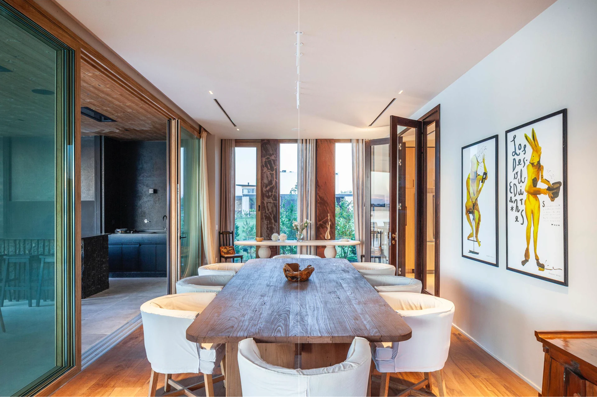

Maderas y terminaciones
Texturas y tonos que le dan carácter a cada puerta.
Explorá los materiales
Diseño, materiales y detalles que acompañan cada forma de habitar.
Explorá nuestras puertasDesde 1958, combinamos experiencia, tecnología y atención al detalle en la fabricación de puertas de interior. Desarrollamos diferentes diseños, terminaciones y sistemas para acompañar las necesidades de cada espacio.
Conocé cómo trabajamos
Explorá nuestras líneas, materiales y terminaciones.

Explorá nuestras líneas, terminaciones y sistemas de marcos. Accedé a la documentación técnica y consultá con nuestro equipo comercial las opciones disponibles para tu obra.
Consultá por tu proyectoRecursos técnicosTexturas y tonos que le dan carácter a cada puerta.
Explorá los materiales
El encuentro entre la puerta y la arquitectura.
Conocé los sistemas
Componentes que acompañan el uso cotidiano.
Conocé los detallesAsesoramiento y consulta directa sobre productos y proyectos.
Contactá a un vendedorConocé los puntos de venta y las líneas que comercializan.
Encontrá un distribuidor